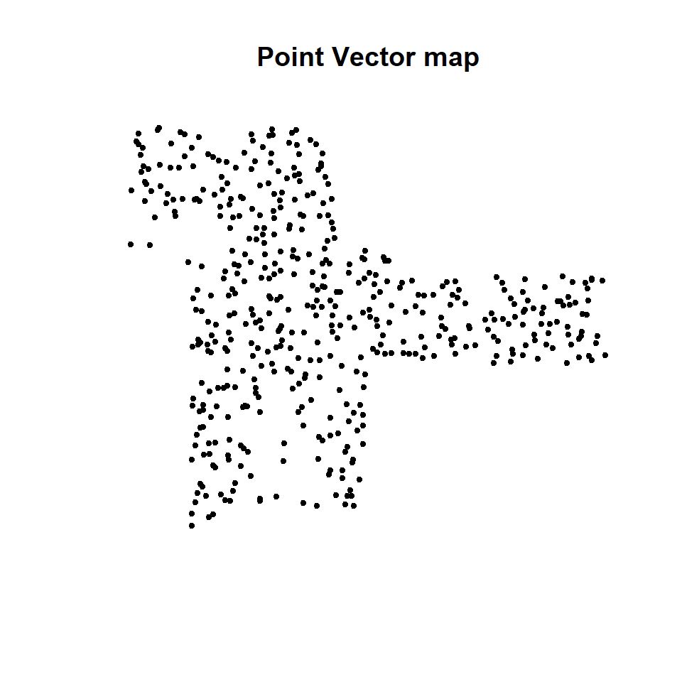
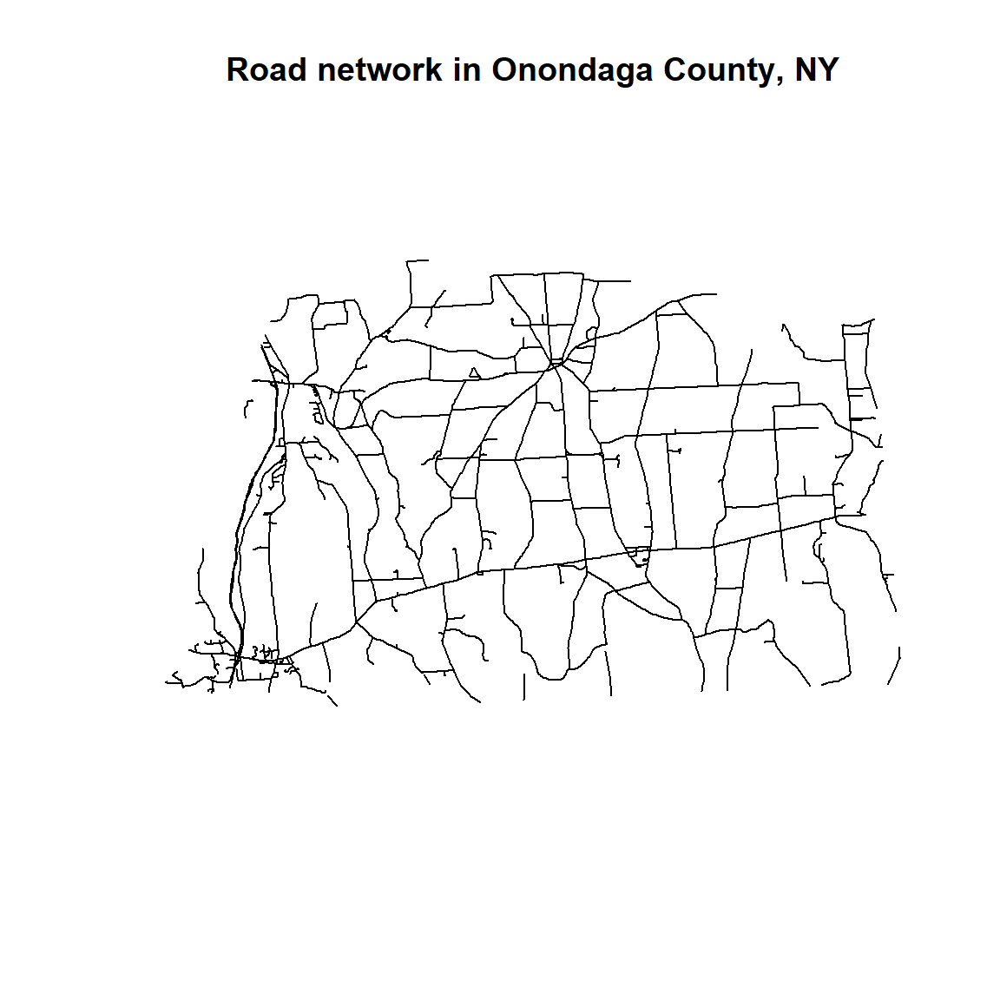

Read and Write Spatial Data
In this exercise, you will learn how to read and write following types of spatial data with R.
R Packages
- maptools: Tools for Reading and Handling Spatial Objects
rgdal: Bindings for the Geospatial Data Abstraction Library
raster: Geographic Data Analysis and Modeling
We will use library() function to load packages in R. We will load three R packages for this lesson
# Load packages
library(maptools) # spatial vector data
library (rgdal) # Geospatial Data Abstraction Library for spatial data
library (raster) # raster and vector data read & writeLoad Data
We will use following data set and could be found here.
- New York State county shape file (Polygon: NY_County_GCS)
- Soil Carbon Data (SOC) from Colorado, Kansas, New Mexico, and Wyoming (Point: GP_SOC_GCS.shp)
- Road network maps of Onondaga county, New York State (polyline: "Onondaga_Street_GCS.shp)
- 90 m SRTM DEM of Onondaga county, New York State (raster: Onondaga_DEM.tif)
- Landsat8 multibands Images
Before reading the data from a local drive, you need to define a working directory from where you want to read or to write data. We will use setwd() function to create a working directory. Or we can define a path for data outside of our working directory from where we can read files. In this case, we will use paste0(data path, “file name”)
#### Set working directory
# setwd("~//Read_Write_Spatial_Data")# Define data folder
dataFolder<-"F://Spatial_Data_Processing_and_Analysis_R//Data//DATA_02//"Vector Data
Vector data consists of “geometry” or “shape” of the locations which describe information of spatial objects on earth. There are three types vector data such as polygons, points and line or polylines which structures of the geometry consists of sets of coordinate pairs (x, y).

Vector Data (Source: http://neondataskills.org/GIS-Spatial-Data/Working-With-Rasters/)
The shapefile, a interchangeably data format which are regulated by ESRI. It is one of the most common form of geospatial vector data used in GIS software and analyses. Three unique files are required for a shapefile, including: .shx (shape index format; this tags the shapefile with a position, so users can move it forward and backward among layers, a .shp (shape format, which stores geometric data, and a .dbf (attribute format file; which holds attributes (information) for the shapes in the file).
In this exercise, we will will learn how to read and write polygons, points and line or polylines vector data in R.
Polygons
Polygons are two-dimensional geographical features covering a portion of the earth’s surface, for example, forests, lakes, administrative boundaries, farmers’ fields, or any other organizational unit the user defines. Polygons are important because their area and perimeter can be measured.
Read Poylgons
For reading ESRI shape file, we can use either readShapePoly(), shapefile(), and readOGR() with maptools, raster, and rgdal packages, respectively. Unlike, rgdal or raster packages, the readShapePoly() functions neither read projection information or write projection system.
# Read with maptools
#poly.GCS<-readShapePoly(NY_County_GCS.shp") # if data in working directory
poly.GCS<-readShapePoly(paste0(dataFolder, "NY_County_GCS.shp")) # read polygon data from data path## Warning: readShapePoly is deprecated; use rgdal::readOGR or sf::st_readprint(proj4string(poly.GCS)) # check projection## [1] NA# Read with raster package
poly.GCS<-shapefile(paste0(dataFolder, "NY_County_GCS.shp")) # read polygon ## Warning in .local(x, ...): .prj file is missingprint(proj4string(poly.GCS)) # check projection## [1] NA# Read with rgdal package
dsn="F://Spatial_Data_Processing_and_Analysis_R//Data//DATA_02"
poly.GCS<- readOGR(dsn=dsn, "NY_County_GCS") ## OGR data source with driver: ESRI Shapefile
## Source: "F:\Spatial_Data_Processing_and_Analysis_R\Data\DATA_02", layer: "NY_County_GCS"
## with 83 features
## It has 12 fieldsprint(proj4string(poly.GCS)) # check projection## [1] NAIf you have set working directory already, no need to define the “dsn” and file extension. Notice that both shapefile() and readOGR() does not read the .prj file, since this file is missing. You can get detail information of vector data with ogrInfo() function without loading the data in R.
ogrInfo(dsn =dsn, "NY_County_GCS")## Source: "F:\Spatial_Data_Processing_and_Analysis_R\Data\DATA_02", layer: "NY_County_GCS"
## Driver: ESRI Shapefile; number of rows: 83
## Feature type: wkbPolygon with 2 dimensions
## Extent: (-79.76333 40.49909) - (-71.85588 45.011)
## LDID: 87
## Number of fields: 12
## name type length typeName
## 1 OBJECTID 4 80 String
## 2 ID 2 24 Real
## 3 AREA 2 24 Real
## 4 PERIMETER 2 24 Real
## 5 COUNTYP020 2 24 Real
## 6 STATE 4 80 String
## 7 COUNTY 4 80 String
## 8 FIPS 4 80 String
## 9 STATE_FIPS 4 80 String
## 10 SQUARE_MIL 2 24 Real
## 11 Shape_Leng 2 24 Real
## 12 Shape_Area 2 24 RealYou can plot county shape file using plot() function.
# Map county shape polygon file
plot(poly.GCS, main="Counties of New York State")
Write Polygon
We will use writeOGR() function of rgdal package or shapefile() function of raster package to write the vector data.
# gdal package
writeOGR(poly.GCS, # input spatial data
dsn =dsn, # output working directory
"NY_County_GCS", # output spatial data
driver="ESRI Shapefile", # define output file as ESRI shapefile
overwrite=TRUE) # write on existing file, if exist
# raster package
shapefile(poly.GCS, paste0(dataFolder, "NY_County_GCS.shp"), overwrite=TRUE) Points Vector
Zero-dimensional points are important for geographical features like wells, soil-sampling locations that can be best expressed by a single reference point. Often point vector data consist off several points into a multi-point structure, with a single attribute record. For example, all the soil sampling points could be considered as a single geometry. The main drawback of a point feature, however, are that they cannot be used to make measurements (as you can with a polygon).
We used 650 soil samples from Colorado, Kansas, New Mexico, and Wyoming. These samples were collected by the United States Geological Survey (USGS) as a part of the USGS Geo-chemical Landscapes Project [Smith et al., 2011]. We will use shapefile() or readOGR() to read this vector data.
# Reading point shape file
point.GCS<- readOGR(dsn=dsn, "GP_SOC_GCS") # with rgdal
## OGR data source with driver: ESRI Shapefile
## Source: "F:\Spatial_Data_Processing_and_Analysis_R\Data\DATA_02", layer: "GP_SOC_GCS"
## with 473 features
## It has 8 fields
# Or
#point.GCS<-shapefile("GP_SOC_GCS.shp") # with raster
point.GCS<-shapefile(paste0(dataFolder,"GP_SOC_GCS.shp")) # with raster
## Warning in .local(x, ...): .prj file is missing
print(proj4string(point.GCS)) # check projection
## [1] NA# Map point shape file
plot(point.GCS,
main= "Point Vector map",
pch=20, # symbol type
cex=0.8) # symbol size
We will use writeOGR() function of rgdal package or shapefile() function of raster package to write the vector data.
# gdal
writeOGR(point.GCS, # input spatial data
dsn=dsn, # output working directory
"bgs_groundwater", # output spatial data
driver="ESRI Shapefile", # define output file as ESRI shapefile
overwrite=TRUE) # write on existing file, if exist
# raster
shapefile(point.GCS, paste0(dataFolder,"GP_SOC_GCS.shp"), overwrite=TRUE)Lines or Polylines
One-dimensional lines, also called polylines, are used to represent geographical features like rivers, roads, railroads, trails, and topographic lines. Note that these features are linear in nature and do not have area like polygons. Hence, they can measure distance. In this exercise we use road network maps of Onondaga county, New York State. This map can be found here.
# Read polylines
#line.GCS<- readOGR(dsn=".", "Ononda_Street_GCS") # read polygon
line.GCS<-shapefile(paste0(dataFolder,"Ononda_Street_GCS.shp")) # with raster
## Warning in .local(x, ...): .prj file is missing
print(proj4string(line.GCS))
## [1] NA# Plot line vactor data
plot(line.GCS, main="Road network in Onondaga County, NY")
Raster data
Unlike vector data, a raster data consists of cells or pixels organized into rows and columns as a matrix where each cell contains a value representing geographical feature on the earth. The size of the area on the surface that each pixel covers is known as the spatial resolution of the image. For instance, an image that has a 1 m spatial resolution means that each pixel in the image represents a 1 m x 1 m area. There are two types of raster data: continuous and discrete. An example of discrete raster data is Land use raster. Data types are flexible, including discrete and categorical data, such as soil or land-use maps, or continuous data as in digital elevation models, precipitation gradient maps, or pollutant concentration maps, etc.

Raster Data (Source: http://neondataskills.org/GIS-Spatial-Data/Working-With-Rasters/)
Generally, two types of raster use in GIS and remote sensing application: a single band, or layer measure of a single characteristic of spatial area and multiple bands raster contains multiple spatially corresponding matrices of cell values representing the same spatial area. An example of a single-band raster data set is a digital elevation model (DEM). Each cell in a DEM contains only one value representing elevation of earth surface. Most satellite imagery has multiple bands, typically containing values within band of the electromagnetic spectrum.
In this exercise, we will use SRTM 90 Digital Elevation Model of Onondaga County, New York State which was downloaded from CGIAR-CSI.
Single band raster
Read raster
raster() function of raster package will use to read the raster data in R
#DEM<-raster("Onondaga_DEM.tif") # load raster data with raster package, working directory
DEM<-raster(paste0(dataFolder,"Onondaga_DEM.tif")) # load raster data with raster package, data folder
print(DEM) # raster Information
## class : RasterLayer
## dimensions : 443, 534, 236562 (nrow, ncol, ncell)
## resolution : 0.001133064, 0.001133064 (x, y)
## extent : -76.50013, -75.89507, 42.77139, 43.27333 (xmin, xmax, ymin, ymax)
## coord. ref. : +proj=longlat +datum=WGS84 +no_defs +ellps=WGS84 +towgs84=0,0,0
## data source : F:\Spatial_Data_Processing_and_Analysis_R\Data\DATA_02\Onondaga_DEM.tif
## names : Onondaga_DEMplot(DEM, main= "DEM raster")
Write raster
Now we will write DEM data using writeRaster() function of raster package
# Write raster
writeRaster(DEM, # Input raster
paste0(dataFolder,"DEM.tif"), # output raster in data folder
"GTiff", # output raster file extension
overwrite=TRUE) # write on existing file, if exist Multi-bands raster
For loading multi-bands image in R, we will use a sub-set of Landsat 8 multispectral image covering Onondaga county of New York state. This image was downloaded from USGS Earth Explore. You can read single band image one by one with raster() function.
# read band 2 (Blue band)
b2<-raster(paste0(dataFolder,".\\LC08_20150706_subset\\LC08_L1TP_015030_20150716_20170226_01_T1_B2.TIF"))
# read band 3 (Green band)
b3<-raster(paste0(dataFolder,".\\LC08_20150706_subset\\LC08_L1TP_015030_20150716_20170226_01_T1_B3.TIF"))
# read band 4 (Red band)
b4<-raster(paste0(dataFolder,".\\LC08_20150706_subset\\LC08_L1TP_015030_20150716_20170226_01_T1_B4.TIF"))
# read band 4 (NIR band)
b5<-raster(paste0(dataFolder,".\\LC08_20150706_subset\\LC08_L1TP_015030_20150716_20170226_01_T1_B5.TIF"))Now, you can use stack() or brick() function to create multi-band raster stack. We will discuss detail in Lesson 4.
# Stack all raster
multi_band<-stack(b2,b3,b4,b5)OR you can create a list of raster layers to use (for example bands 2 to 5) first then use stack() function to raster list read all several raster
bandList <- paste0(dataFolder,".\\LC08_20150706_subset\\LC08_L1TP_015030_20150716_20170226_01_T1_B", 2:5, ".tif")
bandList## [1] "F://Spatial_Data_Processing_and_Analysis_R//Data//DATA_02//.\\LC08_20150706_subset\\LC08_L1TP_015030_20150716_20170226_01_T1_B2.tif"
## [2] "F://Spatial_Data_Processing_and_Analysis_R//Data//DATA_02//.\\LC08_20150706_subset\\LC08_L1TP_015030_20150716_20170226_01_T1_B3.tif"
## [3] "F://Spatial_Data_Processing_and_Analysis_R//Data//DATA_02//.\\LC08_20150706_subset\\LC08_L1TP_015030_20150716_20170226_01_T1_B4.tif"
## [4] "F://Spatial_Data_Processing_and_Analysis_R//Data//DATA_02//.\\LC08_20150706_subset\\LC08_L1TP_015030_20150716_20170226_01_T1_B5.tif"multi_band <- stack(bandList)
multi_band## class : RasterStack
## dimensions : 1853, 1630, 3020390, 4 (nrow, ncol, ncell, nlayers)
## resolution : 30, 30 (x, y)
## extent : 377925, 426825, 4736175, 4791765 (xmin, xmax, ymin, ymax)
## coord. ref. : +proj=utm +zone=18 +datum=WGS84 +units=m +no_defs +ellps=WGS84 +towgs84=0,0,0
## names : LC08_L1TP_015030_20150716_20170226_01_T1_B2, LC08_L1TP_015030_20150716_20170226_01_T1_B3, LC08_L1TP_015030_20150716_20170226_01_T1_B4, LC08_L1TP_015030_20150716_20170226_01_T1_B5Use simple plot function to map all raster in raster stack
# Plot all raster in raster stack
# Rename the raster bands in raster stack
names(multi_band) <- c("B2", "B3", "B4", "B5")
plot(multi_band, main="Blue, Green, Red & NIR bands of Landsat 8")
We use same ##writeRaster()** function to write raster stack of 5 bands as a composite band (multi-band)
#writeRaster(multi_band, ".\\LC08_20150706_subset\\multi_band.tif", overwrite=TRUE)
writeRaster(multi_band, paste0(dataFolder,".\\LC08_20150706_subset\\multi_band.tif"), overwrite=TRUE)rm(list = ls())